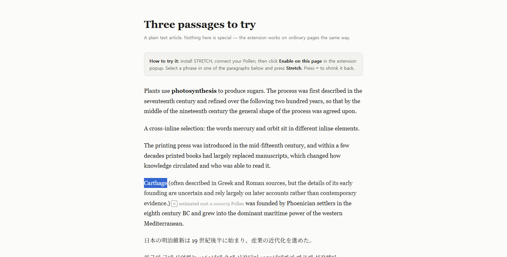

STRETCH
Stretchtext for ordinary web pages. Select a phrase, and the sentence grows an inline addition where you were reading — then shrinks back.

Download stretch-0.1.0.zip Try it on the demo article Privacy
What it looks like

The original wording is never rewritten. The addition is one extension-owned inline element
that can be removed again with −. Expanding it a second time uses the
cached text and makes no new request.
Install
- Download
stretch-0.1.0.zipand extract it. - Open
chrome://extensionsand enable Developer mode. - Click Load unpacked and pick the folder containing
manifest.json. - Pin STRETCH, then open the popup and choose Connect your Pollen.
- On any page, open the popup and choose Enable on this page, then select a phrase.
There is no build step and nothing to install: the ZIP contains the extension source as-is. Try it on the demo article first.
Your Pollen pays for it
STRETCH never holds a shared key. You authorize your own Pollinations account through the device flow, and every stretch is billed to your own wallet. Only two models are offered, and both work with Quest (tier) Pollen.
| Model | Input / 1M tokens | Output / 1M tokens | Measured |
|---|---|---|---|
openai/gpt-5.4-nano (default) | 0.15 Pollen | 0.9375 Pollen | 2–13 s |
deepseek/deepseek-v4.1-flash | 0.15 Pollen | 0.60 Pollen | 9–22 s, richer prose |
A typical stretch costs about 0.0005 Pollen. The popup shows the estimate before you click and the estimated cost computed from the reported usage afterwards.
What is sent
The selected phrase and up to 1,000 code points of context from the same paragraph, before and after it — nothing else. No URL, no page HTML, no telemetry. The full details are in Privacy.
How it talks to Pollinations
The extension calls the Pollinations API directly, with the reader's own Pollen key
(Bring Your Own Pollen). Every call is in
background.js
— the service worker, the only part that ever holds the key:
| Call | Endpoint |
|---|---|
| Sign in (device flow) | POST https://enter.pollinations.ai/api/device/codePOST https://enter.pollinations.ai/api/device/token |
| Model catalogue and prices | GET https://gen.pollinations.ai/v1/models |
| Generate the addition | POST https://gen.pollinations.ai/v1/chat/completions |
Plain-text source: background.js · lib/prompt.js · lib/validate.js
Honest limits
- Top-level document only: iframes and shadow DOM are not supported.
- Selections must stay inside one paragraph; editors and text fields are never modified.
- No Firefox build, no store listing, no sync, no account system.
- Browser-internal pages block extensions by design.